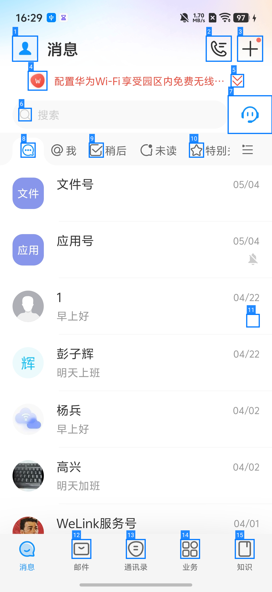
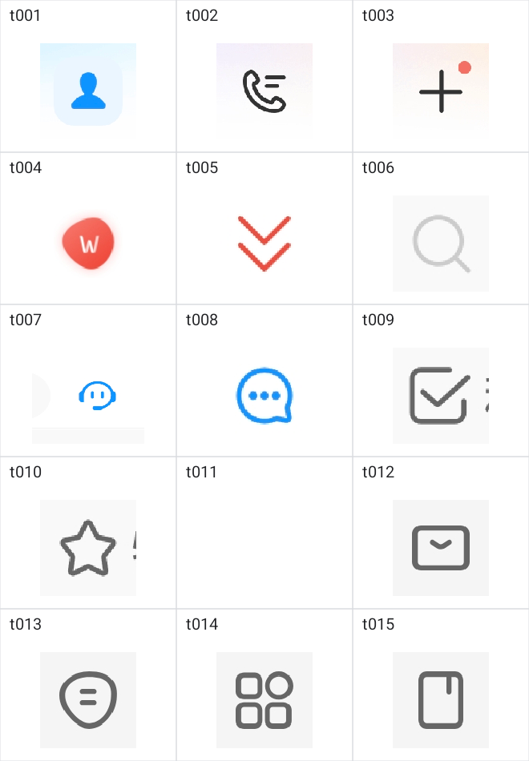

UI Perception Native 线路阶段进展
当前 Native 主链路已经闭环，能够从 Native UI 信息生成结构化 YAML。 下一阶段重点从“链路打通”转向 YAML 规范固化、实验数据补齐、OCR / 小模型增强接入。
一、当前进展
已跑通
Native
已形成 Native UI 信息到结构化 YAML 的完整链路，并在消息、邮件、通讯录、业务等页面上完成初步运行。
分析中
Native + 小模型
正在验证图片输入方式和推理成本，目前已有整图标注输入、裁剪拼图输入两类实验记录。
待启动
Native + OCR
尚未开始接入。定位为文本补盲能力，后续将补充 Native 无法稳定获取的视觉文本。
纯 Native 初步运行结果
| 页面 | 产物 | 评测项 | 已覆盖 | 待补齐 |
|---|---|---|---|---|
| 消息页 | raw XML + YAML | 11 | 9 | 2 |
| 邮件页 | raw XML + YAML | 10 | 7 | 3 |
| 通讯录页 | raw XML + YAML | 10 | 8 | 2 |
| 业务页 | raw XML + YAML | 10 | 8 | 2 |
当前纯 Native 线路已经能覆盖页面身份、文本内容、列表结构、底部导航等主干信息，4 类页面均已产出 raw XML 和 YAML。短板主要集中在 Native XML 本身不容易表达的视觉语义，例如无文本图标、下拉入口、自绘文本等，这部分也是后续 OCR 和小模型增强的重点。
二、Native 到 YAML
Native 原始信息
节点抽取
属性归一化
YAML 输出
YAML 不是 Native dump 的简单格式转换，而是对 UI 页面的规范化抽象，面向上层系统消费、评测和后续增强。
产物结构
页面信息
页面 ID、尺寸、来源类型
元素信息
role、text、bounds、状态
关系信息
父子关系、空间关系、容器结构
统一格式
Native / OCR / 小模型都收敛到 role、name、state、ref、bounds 和层级结构
转换示例
| Native 特征 | YAML role | 归一化说明 |
|---|---|---|
| TextView | text / button | 有文本内容时归一化为 text；如果具备点击属性，则提升为 button |
| ImageView | image | 默认归一化为 image；如果所在节点可点击，则作为 button 的子信息保留 |
| ScrollView / RecyclerView | scroll / list | 保留 scrollable 状态和 bounds，用于描述可滚动区域或列表结构 |
| 可点击容器 | button | 带 clickable 或点击监听的布局节点归一化为 button，并分配 ref |
Native XML 片段
<node class="android.widget.TextView"
text="搜索"
bounds="[42,312][870,407]" />
<node class="android.widget.LinearLayout"
bounds="[870,305][1038,415]">
<node class="android.widget.TextView"
text="客服"
bounds="[902,336][1038,379]" />
</node>
YAML 输出片段
- button "搜索" [ref=n4] [bounds=42,312,870,407] - button [ref=n5] [bounds=870,305,1038,415]: - image - text "客服"
转换过程会把 Native 节点中的文本、位置和交互属性归一化为 YAML 中的 role、text、bounds、ref 等字段，降低上层系统对原始 Native 结构的直接依赖。
三、增强接入方向
增强接入主线
基础 YAML
OCR 文本补盲
小模型语义补充
增强版 YAML
Native 作为主干产物，OCR 和小模型作为增强层补充统一 YAML 字段：OCR 负责文本补盲，小模型负责无文本图标和区域语义补充，不单独生成另一套结果。
补齐分工
| 模块 | 补齐内容 | 进入 YAML 的方式 |
|---|---|---|
| Native XML | 提供结构、文本、位置和基础交互属性 | 生成基础 role、name、state、ref、bounds 和层级 |
| OCR | 补充图片、自绘区域、Native text 缺失场景中的可见文字 | 以 text / name 形式补入对应元素或区域 |
| 小模型 | 补充无文本图标、区域功能、按钮意图等视觉语义 | 补齐元素 name，必要时补充更合适的 role |
增强示例
增强前
- button [ref=n2] [bounds=828,168,933,273] - button [ref=n3] [bounds=933,168,1038,273]
增强后
- button "电话入口" [ref=n2] [bounds=828,168,933,273] - button "新增入口" [ref=n3] [bounds=933,168,1038,273]
当 Native 只能给出“这是一个可点击区域”和位置，但缺少图标含义时，增强逻辑开始发挥作用；补充结果不替换 Native 结构，而是补齐同一元素的名称。
小模型可行性结论
- 当前增强主路径：整图 + 标注框 + PNG + ARGB_8888。
- 低字节候选：JPEG 75 + ARGB_8888（在准确率可接受场景继续验证）。
- 速度关键因子：单次耗时主要受目标数量和输出长度影响。
- 已排除：WebP（链路不支持）、RGB_565（准确率下降明显）。
输入方案展示
整图 + 标注框

直接在截图上画出目标区域和编号，模型通过可见框选区域识别图标。
整图 + 坐标文本
图片保持原样，目标通过坐标文本提供，例如 t002 [828,168,933,273]。
裁剪拼图

先裁剪目标 icon，再拼成一张输入图，降低无关页面区域干扰。
输入方案对比数据
| 输入方式 | 目标数 | 图片准备 | 模型加载 | 推理耗时 | 正确 | 部分正确 | 错误 | 正确率 |
|---|---|---|---|---|---|---|---|---|
| 整图 + 标注框 | 15 | 71ms | 5080ms | 8517ms | 11 | 1 | 3 | 73.3% |
| 整图 + 坐标文本 | 15 | 0ms | 5080ms | 7914ms | 1 | 0 | 14 | 6.7% |
| 裁剪拼图 | 15 | 6ms | 5080ms | 11052ms | 10 | 2 | 3 | 66.7% |
输入方式结论：整图 + 标注框最稳定，作为默认方案；裁剪拼图可作为备选；整图 + 坐标文本虽然准备成本低，但定位稳定性不足。
编码与位深数据与结论
| 方案 | 字节数 | 推理耗时 | 正确率 | 结论 |
|---|---|---|---|---|
| PNG + ARGB_8888 | 575KB | 约 8.4s | 66.7% | 准确率基准，默认安全方案 |
| JPEG 75 + ARGB_8888 | 151KB | 约 8.1s | 60.0% | 字节数优化候选，但准确率弱于 PNG |
| JPEG 90 + ARGB_8888 | 222KB | 约 8.2s | 53.3% | 字节数和准确率都不优于 JPEG 75，暂不保留 |
| PNG + RGB_565 | 317KB | 约 8.8s | 40.0% | 准确率损失明显，不建议继续投入 |
| JPEG 75 + RGB_565 | 153KB | 约 8.4s | 46.7% | 相比 JPEG 75 + 8888 没有收益，且准确率下降 |
| WebP | - | - | - | 当前模型输入链路不支持，直接排除 |
编码与位深结论：主路径保留 PNG + ARGB_8888（准确率基准）和 JPEG 75 + ARGB_8888（低字节候选）；WebP 当前链路不支持，RGB_565 不纳入主路径。
后续策略与判断规则
增强判断规则
| 方向 | 当前判断 | 需要固化的规则 |
|---|---|---|
| 可操作元素判定 | Native 能提供 clickable、focusable、bounds、层级等基础信息，但仍需要统一归一化规则 | 定义 button / input / selectable 的判定条件，避免上层直接依赖原始 Native 节点 |
| 语义补充判定 | 无文本图标、空 name 可点击区域、自绘文本、Native text 与截图不一致，是优先增强场景 | 形成增强触发规则，决定哪些元素需要 OCR 或小模型介入 |
| OCR / 小模型分工 | OCR 更适合补可见文字，小模型更适合补图标含义和区域意图 | 定义二者调用边界、触发时机，以及多来源结果的回填和仲裁方式 |
已形成的观察结论
| 方向 | 当前观察 | 结论 |
|---|---|---|
| 图片大小 | 原图、1024、768、512 长边对比中，未观察到稳定提速；在手机截图尺寸范围内，图片大小不是主要耗时因素 | 不优先继续压缩图片尺寸，避免因过度压缩损失识别效果 |
| 目标数量 / 输出长度 | 3 个目标约 4.1s，15 个目标约 8.4s，差异明显 | 单次耗时主要受目标数量和输出长度影响 |
| 模型加载 | 加载约 5.1s，且加载后可复用 | 作为一次性成本处理，不作为单次识别优化重点 |
后续实验方向
| 方向 | 当前观察 | 后续策略 |
|---|---|---|
| 按需 / 分批识别 | 目标数量和输出长度是更明显的耗时因素 | 优先做按需识别、分批识别，控制单次目标数和输出长度 |
| 输出格式约束 | 短中文标签、一行一个目标、固定编号格式更利于解析 | 继续收敛输出格式，降低 YAML 回填成本 |
| 实验可复盘 | 已保存模型实际输入图、Prompt 和运行结果 | 后续用于复查输入合理性，并沉淀典型样例 |
四、待补齐与下一步
| 方向 | 当前待补齐 | 下一步动作 |
|---|---|---|
| YAML 规范 | 字段边界和版本还需要冻结 | 固化 YAML v0.1 Schema，明确 role、name、state、ref、bounds 等核心字段 |
| 小模型 | 已完成输入方式、图片长边、目标数量等初步对比，样本量仍需扩大 | 继续验证按需识别、分批识别、候选标签约束，并补齐图片尺寸和编码大小等记录字段 |
| OCR | 仍缺少可展示的文本补盲样例 | 准备 Native text 缺失场景样例，并接入统一 YAML 字段 |